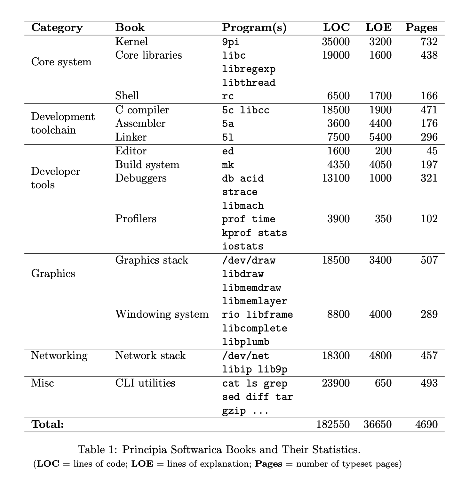
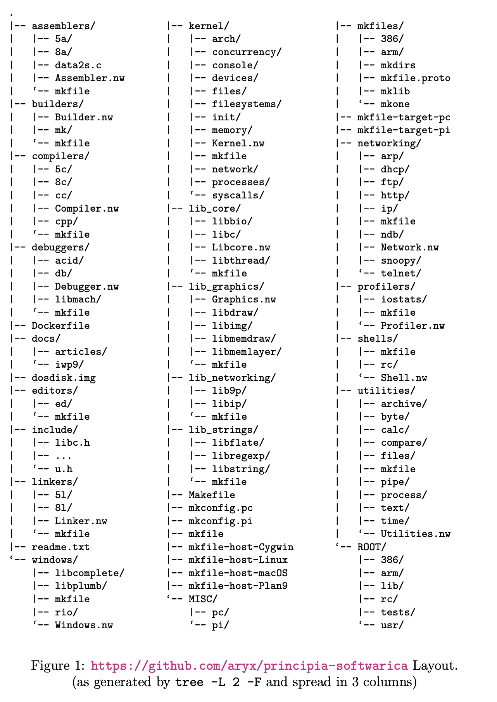
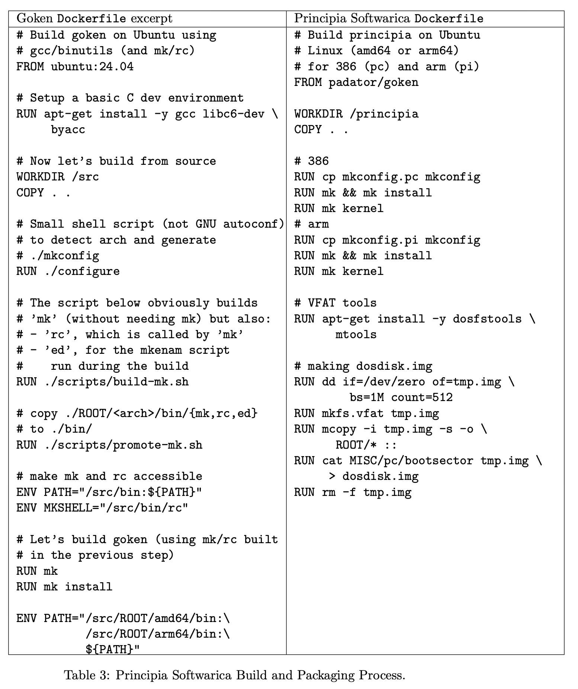

Principia Softwarica
Plan 9 Code Explained
Yoann Padioleau — IWP9


github.com/aryx/principia-softwarica

The Best Engineers Understand the Stack
Facebook: linker slow, bottleneck for everyone
→ most engineers: stuck, accepted it, black box
Engineers like Maurer, Paul Saab who understood the full stack? Most valued. Could debug anything.
Rui Ueyama: explained how linkers work,
then built mold — the fastest linker in the world.
Understand deeply = build better
The Education Gap
Keith Adams — colleague at Facebook, later Chief Architect at Slack — used this as his interview question.
Simple question. The answer involves: the shell, the C library, the kernel,
the graphics stack, the windowing system.
Most engineers can't answer.
“Full stack” today = React + Node + cloud
REAL full stack = compiler, linker, kernel, syscalls
The AI Era Makes This More Important
We write less code. We need MORE understanding.
AI generates code — but who evaluates it?
Who debugs the segfault? The linker error?
AI tools like Claude Code USE the classic commands:
grep, ls, diff,
awk, gcc, ld …
The AI is a power user of the very programs Principia explains.
Writing code = 20%. Understanding = 80%.
AI handles the 20%. The 80% becomes everything.
But the Stack is Enormous
| Linux kernel | ~40M LOC | core ~2M |
| gcc | ~15M LOC | |
| glibc | ~1.5M LOC | |
| bash | ~180K LOC | |
| Xorg server | ~500K LOC | ecosystem: millions |
| xterm alone | ~88K LOC |
Each component: more code than ALL of Plan 9
Plan 9 — 100x Less Code
Thompson, Ritchie, Pike — Whole OS: ~183,000 LOC
rio = 8,800 LOC
terminal < 1K
/dev/cons
Xorg = millions
xterm = 88K
tty, pty, VT100…
Ideal teaching OS: Open source, Small, Real, Complete, Coherent, Self-hosting
Principia Softwarica
Research OS → Teaching OS
Books explaining ALL source code of ALL essential programs
The books ARE the implementations (literate programs)
kernel → compiler → assembler → linker
shell → libc → editor → build system
debugger → graphics → windowing → networking
With Principia: fully answerable.
The Bookset
15 books, 7 categories, 183K LOC total
ARM architecture (simplest widely-used + Raspberry Pi)
LOE/LOC ~1 target — work in progress
The Utilities book: cat, ls,
grep, sed, diff, tar…
The exact commands AI coding tools run hundreds of times a day.
Literate Programming
Donald Knuth, 1984
Mix code + documentation
Present in order of UNDERSTANDING, not compiler order
Piece by piece, separate concerns
Tool: Noweb
Literate Programming 101

Why Books?
Books: teaching for ~2000 years. Survived radio, TV, internet, MOOCs.
- IDE: compiler order, no narrative
- Videos: can't reference, can't search
- AI explanation: no coherent narrative
Syncweb brings IDE features INTO the book
Narrative of a book + navigation of an IDE
Repository Structure
assemblers/5a/notsys/src/cmd/5a- Each dir:
.nwliterate program + generated code kernel/:concurrency/memory/processes/…mkconfig.pc(x86/QEMU) +mkconfig.pi(ARM/RPi)
Good strategy to find bugs: try to explain the code in a book.
Syncweb: Bidirectional LP
Marks + md5 checksums → detect which side changed
Automatic merge or conflict detection
Solves biggest LP complaint
github.com/aryx/syncweb
5 Commands: Clone, Build, Run
Irony: Docker relies on Linux namespaces — inspired by Plan 9
github.com/aryx/goken9cc
Live Demo: Modify, Rebuild, Boot
"Rebuilt the entire OS in under a minute. Try that with Linux."
That ls went through shell, libc, kernel, graphics, windowing.
Every layer — explained in a Principia book.
Future Work
- More explanations (LOE/LOC → 1)
AI could help write explanations - Self-hosting (build Principia from Principia)
- Merge goken + principia codebases
Principia Softwarica
Principia removes the mental barrier.
The stack is not a black box.
These programs are not impossible to understand.
In other fields, students study the masters.
Read the masters' code. Understand everything.
Become a better engineer.
After reading Principia: you'll know. Fully.
Clone it. Build it. Read the books.
github.com/aryx/principia-softwarica